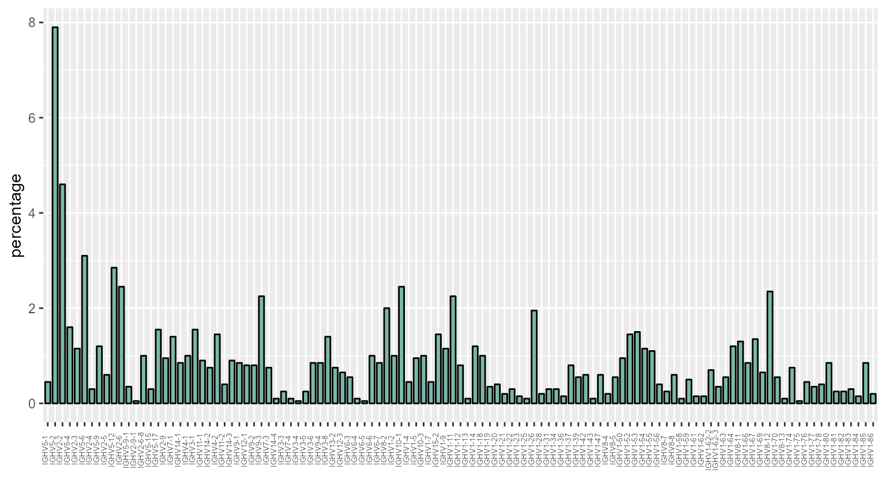
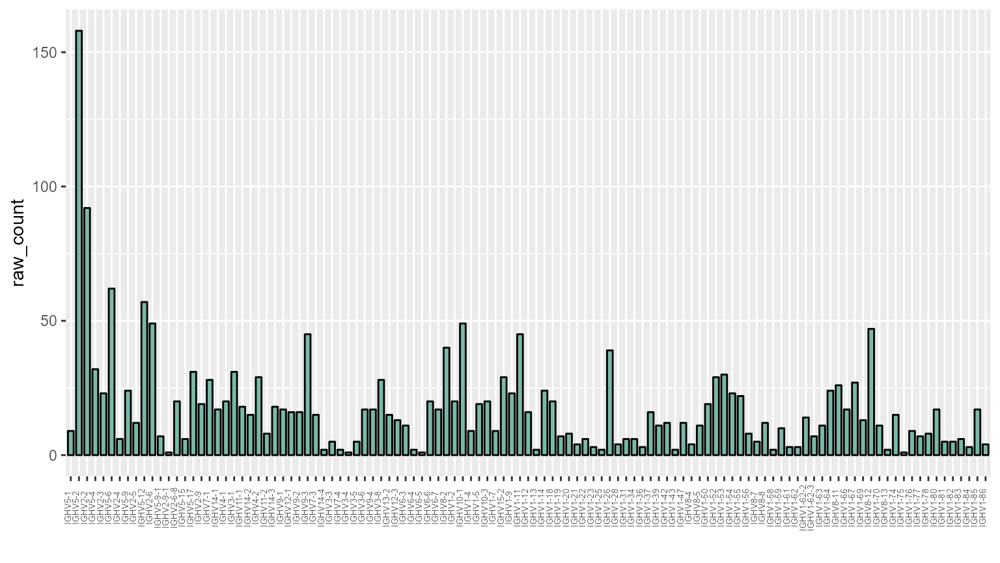

Creating VCALL barplots
vcall_barplot_vignette.RmdInstall and load the library
devtools::install_github("laurabiggins/VCALLplots")
library(VCALLplots)Import data
Use readr::read_tsv() to import data initially. It
should look something like the table below. The required column is
highlighted.
| X1 | SEQUENCE_ID | FUNCTIONAL | IN_FRAME | STOP | D_CALL | J_CALL | V_SEQ_LENGTH | V_GERM_START_VDJ | NP1_LENGTH | NP2_LENGTH | JUNCTION | CDR3_IGBLAST_NT | CDR3_IGBLAST_AA | CDR3_LENGTH | V_CALL_CN | V_CALL | V_SCORE_CN |
|---|---|---|---|---|---|---|---|---|---|---|---|---|---|---|---|---|---|
| 4 | HWI-1KL136:254:C41F5ACXX:6:1101:18315:163514_J4_IGHV3-1_ACTCAATC_24 | TRUE | TRUE | FALSE | IGHD2-4*01 | IGHJ4*01 | 39 | 256 | 13 | 1 | TGTGCAAGAAGAGAGGAAATGCCTATGATTACGACTTATGCTATGGACTACTGG | GCAAGAAGAGAGGAAATGCCTATGATTACGACTTATGCTATGGACTAC | ARREEMPMITTYAMDY | 16 | IGHV3-1*01 | IGHV3-1 | 134 |
| 5 | HWI-1KL136:254:C41F5ACXX:6:1102:7306:149301_J4_IGHV1-70_GGTGAAGT_3 | TRUE | TRUE | FALSE | IGHD2-4*01 | IGHJ4*01 | 41 | 254 | 5 | 6 | TGTGCAAGAGGGGACTACTATGATTACGGAGGGGACTATGCTATGGACTACTGG | GCAAGAGGGGACTACTATGATTACGGAGGGGACTATGCTATGGACTAC | ARGDYYDYGGDYAMDY | 16 | IGHV1-70*01 | IGHV1-70 | 140 |
| 7 | HWI-1KL136:254:C41F5ACXX:6:1102:21146:66124_J3_IGHV5-17_GATTCACC_40 | TRUE | TRUE | FALSE | IGHD1-1*01 | IGHJ3*01 | 84 | 200 | 8 | 2 | ATTTTATTTATTACTACGGTAGTAGCCTCCTGGTTTGCTTACTGG | TTATTTATTACTACGGTAGTAGCCTCCTGGTTTGCTTAC | LFITTVVASWFAY | 13 | IGHV5-17*01 | IGHV5-17 | 126 |
| 29 | HWI-1KL136:254:C41F5ACXX:6:1105:11378:127524_J4_IGHV10-3_TTCAGTGA_26 | TRUE | TRUE | FALSE | IGHD2-8*01 | IGHJ4*01 | 108 | 192 | 1 | 2 | TGTGTGAGGTCTACTATGGTAACTTTCTATGCTATGGACTACTGG | GTGAGGTCTACTATGGTAACTTTCTATGCTATGGACTAC | VRSTMVTFYAMDY | 13 | IGHV10-1*01 | IGHV10-1 | 163 |
| 40 | HWI-1KL136:254:C41F5ACXX:6:1105:10535:103678_J3_IGHV5-2_TTGCAGGT_24 | TRUE | TRUE | FALSE | IGHD2-8*01 | IGHJ3*01 | 46 | 250 | 4 | 4 | TGTGCAAGACCCCCCTATGGTAACTACCCGGCCTGGTTTGCTTACTGG | GCAAGACCCCCCTATGGTAACTACCCGGCCTGGTTTGCTTAC | ARPPYGNYPAWFAY | 14 | IGHV5-2*01 | IGHV5-2 | 131 |
| 42 | HWI-1KL136:254:C41F5ACXX:6:1102:19970:95634_J2_IGHV8-2_TTCACTGA_20 | TRUE | TRUE | FALSE | IGHD1-1*01 | IGHJ2*01 | 39 | 260 | 4 | 6 | TGTGCTTGGAGAGCGTCTATTACTACGGTAGTAGCTATCGACTACTACTTTGACTACTGG | TGGAGAGCGTCTATTACTACGGTAGTAGCTATCGACTACTACTTTGACTAC | WRASITTVVAIDYYFDY | 17 | IGHV8-2*01 | IGHV8-2 | 157 |
Count the vcalls
Use the process_vcalls function. The only required
argument is the tibble of imported data. This table must have a column
containing the V calls, by default the column name is assumed to be
“V_CALL”, but if different, this can be specified using the
vcall_col argument.
processed_vcalls <- process_vcalls(vcall_eg)OR… Explicitly specifying the column name:
processed_vcalls <- process_vcalls(vcall_eg, vcall_col = "V_CALL")That should produce a table of counts similar to this:
| VCALL | raw_count | percentage |
|---|---|---|
| IGHV5-1 | 9 | 0.45 |
| IGHV5-2 | 158 | 7.90 |
| IGHV2-2 | 92 | 4.60 |
| IGHV5-4 | 32 | 1.60 |
| IGHV2-3 | 23 | 1.15 |
| IGHV5-6 | 62 | 3.10 |
To export this count data, use readr::write_csv().
For example:
readr::write_csv(x = processed_vcalls, file = "processed_vcalls.csv")Create bar plot
The table of counts can be passed directly to the
vcall_barplot function.
vcall_barplot(processed_vcalls)
To show the raw_counts instead of percentages, use the
y_val parameter.
vcall_barplot(processed_vcalls, y_val = "raw_count")